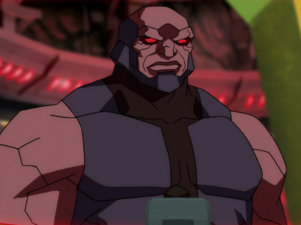

Lex Luthor. Brainiac. Bizarro. Darkseid. Darkseid is the unquestioned master of Apokolips, a far-flung planet populated with godlike beings of immense evil. Apokolips shares its solar system with New Genesis, a planet of similar, but more benevolent beings. As ruler of Apokolips, Darkseid spends his time menacing the citizens of New Genesis, and the rest of the universe, in his hunt For the all-powerful 'Anti-Life Equation,' which will give him the power to rule the universe.  Doomsday. Many villains have given Superman a run for his money. Some have even defeated him, bested him, outwitted him, or conquered him. But only Doomsday has actually killed Superman. Zod. Mr. Mxyzptlk. Mongul. Batman. The teen titans. Starfire. Damian Wayne. Beast boy. Raven. GREEN ARROW. SHAZAM. SPIDER-MAN.